산업안전기사 (2018-08-19 기출문제)
1과목: 안전관리론
1. 집단에서의 인간관계 메커니즘(Mechanism)과 가장 거리가 먼 것은?
- 모방, 암시
- 분열, 강박
- 동일화, 일체화
- 커뮤니케이션, 공감
(정답률: 83%)

2. 산업안전보건법령에 따른 안전보건관리규정에 포함되어야 할 세부 내용이 아닌 것은?
- 위험성 감소대책 수립 및 시행에 관한 사항
- 하도급 사업장에 대한 안전·보건관리에 관한 사항
- 질병자의 근로 금지 및 취업 제한 등에 관한 사항
- 물질안전보건자료에 관한 사항
(정답률: 48%)
3. 안전교육 중 프로그램 학습법의 장점이 아닌 것은?
- 학습자의 학습과정을 쉽게 알 수 있다.
- 여러 가지 수업 매체를 동시에 다양하게 활용할 수 있다.
- 지능, 학습속도 등 개인차를 충분히 고려할 수 있다.
- 매 반응마다 피드백이 주어지기 때문에 학습자가 흥미를 가질 수 있다.
(정답률: 60%)
4. 산업안전보건법령에 따른 근로자 안전·보건교육 중 근로자 정기 안전·보건교육의 교육내용에 해당하지 않는 것은? (단, 산업안전보건법 및 일반관리에 관한 사항은 제외한다.)
- 건강증진 및 질병 예방에 관한 사항
- 산업보건 및 직업병 예방에 관한 사항
- 유해·위험 작업환경 관리에 관한 사항
- 작업공정의 유해·위험과 재해 예방대책에 관한 사항
(정답률: 54%)
5. 최대사용전압이 교류(실효값) 500V 또는 직류 750V인 내전압용 절연장갑의 등급은?
- 00
- 0
- 1
- 2
(정답률: 68%)
6. 산업재해 기록·분류에 관한 지침에 따른 분류기준 중 다음의 ( ) 안에 알맞은 것은?
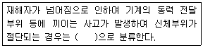
- 넘어짐
- 끼임
- 깔림
- 절단
(정답률: 71%)
7. 산업안전보건법령에 따라 사업주가 사업장에서 중대재해가 발생한 사실을 알게 된 경우 관할지방고용노동관서의 장에게 보고하여야 하는 시기로 옳은 것은? (단, 천재지변 등 부득이한 사유가 발생한 경우는 제외한다.)
- 지체 없이
- 12시간 이내
- 24시간 이내
- 48시간 이내
(정답률: 86%)
8. 유기화합물용 방독마스크의 시험가스가 아닌 것은?
- 증기(Cl2)
- 디메틸에테르(CH3OCH3)
- 시클로헥산(C6H12)
- 이소부탄(C4H10)
(정답률: 84%)
9. 안전교육의 학습경험선정 원리에 해당되지 않는 것은?
- 계속성의 원리
- 가능성의 원리
- 동기유발의 원리
- 다목적 달성의 원리
(정답률: 50%)
10. 재해사례연구의 진행순서로 옳은 것은?
- 재해 상황 파악 → 사실의 확인 → 문제점 발견 → 근본적 문제점 결정 → 대책 수립
- 사실의 확인 → 재해 상황 파악 → 문제점 발견 → 근본적 문제점 결정 → 대책 수립
- 재해 상황 파악 → 사실의 확인 → 근본적 문제점 결정 → 문제점 발견 → 대책 수립
- 사실의 확인 → 재해 상황 파악 → 근본적 문제점 결정 → 문제점 발견 → 대책 수립
(정답률: 78%)
11. 산업안전보건법령에 따른 특정행위의 지시 및 사실의 고지에 사용되는 안전·보건표지의 색도기준으로 옳은 것은?
- 2.5G 4/10
- 2.5PB 4/10
- 5Y 8.5/12
- 7.5R 4/14
(정답률: 76%)
12. 부주의에 대한 사고방지대책 중 기능 및 작업측면의 대책이 아닌 것은?
- 작업표준의 습관화
- 적성배치
- 안전의식의 제고
- 작업조건의 개선
(정답률: 58%)
13. 버드(Bird)의 신연쇄성 이론 중 재해발생의 근원적 원인에 해당하는 것은?
- 상해 발생
- 징후 발생
- 접촉 발생
- 관리의 부족
(정답률: 75%)
14. 브레인스토밍(Brain-storming) 기법의 4원칙에 관한 설명으로 옳은 것은?
- 주제와 관련이 없는 내용은 발표할 수 없다.
- 동료의 의견에 대하여 좋고 나쁨을 평가한다.
- 발표 순서를 정하고, 동일한 발표기회를 부여한다.
- 타인의 의견에 대하여는 수정하여 발표할 수 있다.
(정답률: 85%)
15. 주의의 특성에 해당되지 않는 것은?
- 선택성
- 변동성
- 가능성
- 방향성
(정답률: 52%)
16. OJT(On Job Training)의 특징에 대한 설명으로 옳은 것은?
- 특별한 교재·교구·설비 등을 이용하는 것이 가능하다.
- 외부의 전문가를 위촉하여 전문교육을 실시할 수 있다.
- 직장의 실정에 맞는 구체적이고 실제적인 지도 교육이 가능하다.
- 다수의 근로자들에게 조직적 훈련이 가능하다.
(정답률: 86%)
17. 연간근로자수가 1000명인 공장의 도수율이 10인 경우 이공장에서 연간 발생한 재해건수는 몇 건인가?
- 20건
- 22건
- 24건
- 26건
(정답률: 75%)
18. 산업안전보건법령상 안전검사 대상 유해·위험 기계등에 해당하는 것은?
- 정격 하중이 2톤 미만인 크레인
- 이동식 국소 배기장치
- 밀폐형 구조 롤러기
- 산업용 원심기
(정답률: 72%)
19. 안전교육 방법의 4단계의 순서로 옳은 것은?
- 도입 → 확인 → 적용 → 제시
- 도입 → 제시 → 적용 → 확인
- 제시 → 도입 → 적용 → 확인
- 제시 → 확인 → 도입 → 적용
(정답률: 71%)
20. 관리 그리드 이론에서 인간관계 유지에는 낮은 관심을 보이지만 과업에 대해서는 높은 관심을 가지는 리더십의 유형은?
- 1.1형
- 1.9형
- 9.1형
- 9.9형
(정답률: 67%)
2과목: 인간공학 및 시스템안전공학
21. 고용노동부 고시의 근골격계부담작업의 범위에서 근골격계부담작업에 대한 설명으로 틀린 것은?
- 하루에 10회 이상 25kg 이상의 물체를 드는 작업
- 하루에 총 2시간 이상 쪼그리고 앉거나 무릎을 굽힌 자세에서 이루어지는 작업
- 하루에 총 2시간 이상 집중적으로 자료입력 등을 위해 키보드 또는 마우스를 조작하는 작업
- 하루에 총 2시간 이상 지지되지 않은 상태에서 4.5kg 이상의 물건을 한 손으로 들거나 동일한 힘으로 쥐는 작업
(정답률: 82%)
22. 양립성(compatibility)에 대한 설명 중 틀린 것은?
- 개념양립성, 운동양립성, 공간양립성 등이 있다.
- 인간의 기대에 맞는 자극과 반응의 관계를 의미한다.
- 양립성의 효과가 크면 클수록, 코딩의 시간이나 반응의 시간은 길어진다.
- 양립성이 인간의 예상과 어느 정도 일치하는 것을 의미 한다.
(정답률: 81%)
23. 정보처리과정에서 부적절한 분석이나 의사결정의 오류에 의하여 발생하는 행동은?
- 규칙에 기초한 행동(rule-based behavior)
- 기능에 기초한 행동(skill-based behavior)
- 지식에 기초한 행동(knowledge-based behavior)
- 무의식에 기초한 행동(unconsciousness-based behavior)
(정답률: 73%)
24. 욕조곡선의 설명으로 맞는 것은?
- 마모고장 기간의 고장 형태는 감소형이다.
- 디버깅(Debugging) 기간은 마모고장에 나타난다.
- 부식 또는 산화로 인하여 초기고장이 일어난다.
- 우발고장기간은 고장률이 비교적 낮고 일정한 현상이 나타난다
(정답률: 72%)
25. 시력에 대한 설명으로 맞는 것은?
- 배열시력(vernier acuity) - 배경과 구별하여 탐지할 수 있는 최소의 점
- 동적시력(dynamic visual acuity) - 비슷한 두 물체가 다른 거리에 있다고 느껴지는 시차각의 최소차로 측정되는 시력
- 입체시력(stereoscopic acuity) - 거리가 있는 한 물체에 대한 약간 다른 상이 두 눈의 망막에 맺힐 때 이것을 구별하는 능력
- 최소지각시력(minimum perceptible acuity) - 하나의 수직선이 중간에서 끊겨 아래 부분이 옆으로 옮겨진 경우에 탐지할 수 있는 최소 측변방위
(정답률: 63%)
26. 인간의 귀의 구조에 대한 설명으로 틀린 것은?(문제 오류로 가답안 발표시 2번으로 발표되었지만 확정답안 발표시 2, 4번이 정답 처리 되었습니다. 여기서는 가답안인 2번을 누르면 정답 처리 됩니다.)
- 외이는 귓바퀴와 외이도로 구성된다.
- 고막은 중이와 내이의 경계부위에 위치해 있으며 음파를 진동으로 바꾼다.
- 중이에는 인두와 교통하여 고실 내압을 조절하는 유스타키오관이 존재한다.
- 내이는 신체의 평형감각수용기인 반규관과 청각을 담당하는 전정기관 및 와우로 구성되어 있다.
(정답률: 81%)
27. FTA를 수행함에 있어 기본사상들의 발생이 서로 독립인가 아닌가의 여부를 파악하기 위해서는 어느 값을 계산해 보는 것이 가장 적합한가?
- 공분산
- 분산
- 고장률
- 발생확률
(정답률: 55%)
28. 산업안전보건법령에 따라 제출된 유해·위험방지계획서의 심사 결과에 따른 구분·판정결과에 해당하지 않는 것은?
- 적정
- 일부 적정
- 부적정
- 조건부 적정
(정답률: 78%)
29. 일반적으로 기계가 인간보다 우월한 기능에 해당되는 것은? (단, 인공지능은 제외한다.)
- 귀납적으로 추리한다.
- 원칙을 적용하여 다양한 문제를 해결한다.
- 다양한 경험을 토대로 하여 의사 결정을 한다.
- 명시된 절차에 따라 신속하고, 정량적인 정보처리를 한다.
(정답률: 81%)
30. 섬유유연제 생산 공정이 복잡하게 연결되어 있어 작업자의 불안전한 행동을 유발하는 상황이 발생하고 있다. 이것을 해결하기 위한 위험처리 기술에 해당하지 않는 것은?
- Transfer(위험전가)
- Retention(위험보류)
- Reduction(위험감축)
- Rearrange(작업순서의 변경 및 재배열)
(정답률: 46%)
31. 다음 그림의 결함수에서 최소 패스셋(minmal path sets)과 그 신뢰도 R(t)는? (단, 각각의 부품 신뢰도는 0.9이다.)
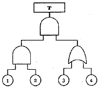
- 최소 패스셋 : ｛1｝,｛2｝,｛3, 4｝
R(t) = 0.9081 - 최소 패스셋 : ｛1｝,｛2｝,｛3, 4｝
R(t) = 0.9981 - 최소 패스셋 : ｛1, 2, 3｝,｛1, 2, 4｝
R(t) = 0.9081 - 최소 패스셋 : ｛1, 2, 3｝,｛1, 2, 4｝
R(t) = 0.9981
(정답률: 43%)
32. 3개 공정의 소음수준 측정 결과 1공정은 100dB에서 1시간, 2공정은 95dB에서 1시간, 3공정은 90dB에서 1시간이 소요될 때 총 소음량(TND)과 소음설계의 적합성을 맞게 나열한 것은? (단, 90dB에 8시간 노출될 때를 허용기준으로 하며, 5dB증가할 때 허용시간은 1/2로 감소되는 법칙을 적용한다.)
- TND = 0.785, 적합
- TND = 0.875, 적합
- TND = 0.985, 적합
- TND = 1.085, 부적합
(정답률: 56%)
33. 인간공학에 있어 기본적인 가정에 관한 설명으로 틀린 것은?
- 인간 기능의 효율은 인간 – 기계 시스템의 효율과 연계된다.
- 인간에게 적절한 동기부여가 된다면 좀 더 나은 성과를 얻게 된다.
- 개인이 시스템에서 효과적으로 기능을 하지 못하여도 시스템의 수행도는 변함없다.
- 장비, 물건, 환경 특성이 인간의 수행도와 인간 – 기계 시스템의 성과에 영향을 준다.
(정답률: 83%)
34. 안전성 평가의 기본원칙 6단계에 해당되지 않는 것은?
- 안전대책
- 정성적 평가
- 작업환경 평가
- 관계 자료의 정비검토
(정답률: 48%)
35. 다음 내용의 ( )안에 들어갈 내용을 순서대로 정리한 것은?
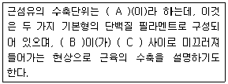
- A: 근막, B: 마이오신, C: 액틴
- A: 근막, B: 액틴, C: 마이오신
- A: 근원섬유, B: 근막, C: 근섬유
- A: 근원섬유, B: 액틴, C: 마이오신
(정답률: 63%)
36. 소음 발생에 있어 음원에 대한 대책으로 볼 수 없는 것은?
- 설비의 격리
- 적절한 재배치
- 저소음 설비 사용
- 귀마개 및 귀덮개 사용
(정답률: 82%)
37. 인간공학적 의자 설계의 원리로 가장 적합하지 않은 것은?
- 자세고정을 줄인다.
- 요부측만을 촉진한다.
- 디스크 압력을 줄인다.
- 등근육의 정적 부하를 줄인다.
(정답률: 85%)
38. FTA에서 사용되는 논리게이트 중 입력과 반대되는 현상으로 출력되는 것은?
- 부정 게이트
- 억제 게이트
- 배타적 OR 게이트
- 우선적 AND 게이트
(정답률: 77%)
39. 다음 그림에서 시스템 위험분석 기법 중 PHA(예비위험분석)가 실행되는 사이클의 영역으로 맞는 것은?
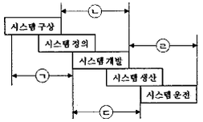
- ㉠
- ㉡
- ㉢
- ㉣
(정답률: 76%)
40. 인간과 기계의 신뢰도가 인간 0.40, 기계 0.95인 경우, 병렬작업 시 전체 신뢰도는?
- 0.89
- 0.92
- 0.95
- 0.97
(정답률: 75%)
3과목: 기계위험방지기술
41. 어떤 양중기에서 3000kg의 질량을 가진 물체를 한쪽이 45°인 각도로 그림과 같이 2개의 와이어로프로 직접 들어올릴 때, 안전율이 고려된 가장 적절한 와이어로프 지름을 표에서 구하면?(단, 안전율은 산업안전보건법령을 따르고, 두 와이어로프의 지름은 동일하며, 기준을 만족하는 가장 작은 지름을 선정한다.)
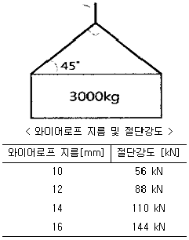
- 10mm
- 12mm
- 14mm
- 16mm
(정답률: 46%)
42. 다음 중 금형 설치·해체작업의 일반적인 안전사항으로 틀린 것은?
- 금형을 설치하는 프레스의 T홈 안길이는 설치 볼트 직경 이하로 한다.
- 금형의 설치용구는 프레스의 구조에 적합한 형태로 한다.
- 고정볼트는 고정 후 가능하면 나사산이 3~4개 정도 짧게 남겨 슬라이드 면과의 사이에 협착이 발생하지 않도록 해야 한다.
- 금형 고정용 브래킷(물림판)을 고정시킬 때 고정용 브래킷은 수평이 되게 하고, 고정볼트는 수직이 되게 고정하여야 한다.
(정답률: 67%)
43. 휴대용 동력드릴의 사용 시 주의해야 할 사항에 대한 설명으로 옳지 않은 것은?
- 드릴 작업 시 과도한 진동을 일으키면 즉시 작업을 중단한다.
- 드릴이나 리머를 고정하거나 제거할 때는 금속성 망치 등을 사용한다.
- 절삭하기 위하여 구멍에 드릴날을 넣거나 뺄 때는 팔을 드릴과 직선이 되도록 한다.
- 작업 중에는 드릴을 구멍에 맞추거나 하기 위해서 드릴 날을 손으로 잡아서는 안된다.
(정답률: 79%)
44. 방호장치를 분류할 때는 크게 위험장소에 대한 방호장치와 위험원에 대한 방호장치로 구분할 수 있는데, 다음 중 위험장소에 대한 방호장치가 아닌 것은?
- 격리형 방호장치
- 접근거부형 방호장치
- 접근반응형 방호장치
- 포집형 방호장치
(정답률: 73%)
45. 다음 ( )안의 A와 B의 내용을 옳게 나타낸 것은?
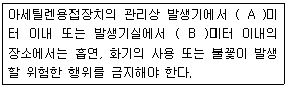
- A: 7, B: 5
- A: 3, B: 1
- A: 5, B: 5
- A: 5, B: 3
(정답률: 71%)
46. 크레인의 로프에 질량 100kg인 물체를 5m/s2의 가속도로 감아올릴 때, 로프에 걸리는 하중은 약 몇 N인가?
- 500 N
- 1480 N
- 2540N
- 4900 N
(정답률: 54%)
47. 침투탐상검사에서 일반적인 작업 순서로 옳은 것은?
- 전처리 → 침투처리 → 세척처리 → 현상처리 → 관찰 → 후처리
- 전처리 → 세척처리 → 침투처리 → 현상처리 → 관찰 → 후처리
- 전처리 → 현상처리 → 침투처리 → 세척처리 → 관찰 → 후처리
- 전처리 → 침투처리 → 현상처리 → 세척처리 → 관찰 → 후처리
(정답률: 52%)
48. 연삭기 덮개의 개구부 각도가 그림과 같이 150° 이하여야 하는 연삭기의 종류로 옳은 것은?
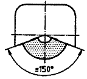
- 센터리스 연삭기
- 탁상용 연삭기
- 내면 연삭기
- 평면 연삭기
(정답률: 51%)
49. 다음 중 선반에서 사용하는 바이트와 관련된 방호장치는?
- 심압대
- 터릿
- 칩 브레이커
- 주축대
(정답률: 77%)
50. 프레스기를 사용하여 작업을 할 때 작업시작 전 점검사항으로 틀린 것은?
- 클러치 및 브레이크의 기능
- 압력방출장치의 기능
- 크랭크축·플라이휠·슬라이드·연결봉 및 연결나사의 풀림유무
- 금형 및 고정 볼트의 상태
(정답률: 78%)
51. 다음 중 기계 설비에서 재료 내부의 균열결함을 확인할 수 있는 가장 적절한 검사 방법은?
- 육안검사
- 초음파탐상검사
- 피로검사
- 액체침투탐상검사
(정답률: 75%)
52. 다음은 프레스 제작 및 안전기준에 따라 높이 2m 이상인 작업용 발판의 설치 기준을 설명한 것이다. ( )안에 알맞은 말은?
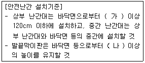
- 가. 90 cm 나. 10 cm
- 가. 60 cm 나. 10 cm
- 가. 90 cm 나. 20 cm
- 가. 60 cm 나. 20 cm
(정답률: 63%)
53. 다음 중 산업안전보건법령상 보일러 및 압력용기에 관한 사항으로 틀린 것은?
- 공정안전보고서 제출 대상으로서 이행상태 평가결과가 우수한 사업장의 경우 보일러의 압력방출장치에 대하여 8년에 1회 이상으로 설정압력에서 압력방출장치가 적정하게 작동하는지를 검사할 수 있다.
- 보일러의 안전한 가동을 위하여 보일러 규격에 맞는 압력방출장치를 1개 이상 설치하고 최고 사용압력 이하에서 작동되도록 하여야 한다.
- 보일러의 과열을 방지하기 위하여 최고사용압력과 상용 압력 사이에서 보일러의 버너 연소를 차단할 수 있도록 압력제한스위치를 부착하여 사용하여야 한다.
- 압력용기에서는 이를 식별할 수 있도록 하기 위하여 그 압력 용기의 최고사용압력, 제조연월일, 제조회사명이 지워지지 않도록 각인(刻印) 표시된 것을 사용하여야 한다.
(정답률: 77%)
54. 목재가공용 둥근톱 기계에서 가동식 접촉예방장치에 대한 요건으로 옳지 않은 것은?
- 덮개의 하단이 송급되는 가공재의 상면에 항상 접하는 방식의 것이고 절단작업을 하고 있지 않을 때에는 톱날에 접촉되는 것을 방지할 수 있어야 한다.
- 절단작업 중 가공재의 절단에 필요한 날 이외의 부분을 항상 자동적으로 덮을 수 있는 구조여야 한다.
- 지지부는 덮개의 위치를 조정할 수 있고 체결볼트에는 이완방지조치를 해야 한다..
- 톱날이 보이지 않게 완전히 가려진 구조이어야 한다.
(정답률: 64%)
55. 다음 중 기계설비에서 반대로 회전하는 두 개의 회전체가 맞닿는 사이에 발생하는 위험점을 무엇이라 하는가?
- 물림점(nip point)
- 협착점(squeeze pint)
- 접선물림점(tangential point)
- 회전말림점(trapping point)
(정답률: 63%)
56. 롤러의 가드 설치방법 중 안전한 작업공간에서 사고를 일으키는 공간함정(trap)을 막기위해 확보해야할 신체 부위별 최소 틈새가 바르게 짝지어진 것은?(오류 신고가 접수된 문제입니다. 반드시 정답과 해설을 확인하시기 바랍니다.)
- 다리: 240mm
- 발: 180mm
- 손목: 150mm
- 손가락: 25mm
(정답률: 53%)
57. 지게차가 부하상태에서 수평거리가 12m이고, 수직높이가 1.5m인 오르막길을 주행할 때 이 지게차의 전후 안정도와 지게차 안정도 기준의 전후 안정도와 지게차 안정도 기준의 만족여부로 옳은 것은?
- 지게차 전후 안정도는 12.5%이고 안정도 기준을 만족하지 못한다.
- 지게차 전후 안정도는 12.5%이고 안정도 기준을 만족한다.
- 지게차 전후 안정도는 25%이고 안정도 기준을 만족하지 못한다.
- 지게차 전후 안정도는 25%이고 안정도 기준을 만족한다.
(정답률: 57%)
58. 사출성형기에서 동력작동시 금형고정장치의 안전사항에 대한 설명으로 옳지 않은 것은?
- 금형 또는 부품의 낙하를 방지하기 위해 기계적 억제장치를 추가하거나 자체 고정장치(self retain clamping unit) 등을 설치해야 한다.
- 자석식 금형 고정장치는 상·하(좌·우) 금형의 정확한 위치가 자동적으로 모니터(monitor)되어야 한다.
- 상·하(좌·우)의 두 금형 중 어느 하나가 위치를 이탈하는 경우 플레이트를 작동시켜야 한다.
- 전자석 금형 고정장치를 사용하는 경우에는 전자기파에 의한 영향을 받지 않도록 전자파 내성대책을 고려해야 한다.
(정답률: 68%)
59. 인장강도가 250N/mm2인 강판의 안전율이 4 라면 이 강판의 허용응력(N/mm2)은 얼마인가?
- 42.5
- 62.5
- 82.5
- 102.5
(정답률: 82%)
60. 다음 설명 중 ( )안에 알맞은 내용은?
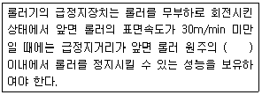
- 1/2
- 1/4
- 1/3
- 1/2.5
(정답률: 78%)
4과목: 전기위험방지기술
61. 심장의 맥동주기 중 어느 때에 전격이 인가되면 심실세동을 일으킬 확률이 크고, 위험한가?
- 심방의 수축이 있을 때
- 심실의 수축이 있을 때
- 심실의 수축 종료 후 심실의 휴식이 있을 때
- 심실의 수축이 있고 심방의 휴식이 있을 때
(정답률: 75%)
62. 교류 아크 용접기의 전격방지장치에서 시동감도를 바르게 정의한 것은?
- 용접봉을 모재에 접촉시켜 아크를 발생시킬 때 전격방지 장치가 동작할 수 있는 용접기의 2차측 최대저항을 말한다.
- 안전전압(24V 이하)이 2차측 전압(85~95V)으로 얼마나 빨리 전환되는가 하는 것을 말한다.
- 용접봉을 모재로부터 분리시킨 후 주접점이 개로 되어 용접기의 2차측 전압이 무부하 전압(25V 이하)으로 될 때까지의 시간을 말한다.
- 용접봉에서 아크를 발생시키고 있을 때 누설전류가 발생하면 전격방지 장치를 작동시켜야 할지 운전을 계속해야 할지를 결정해야 하는 민감도를 말한다.
(정답률: 43%)
63. 다음 ( )안에 들어갈 내용으로 옳은 것은?
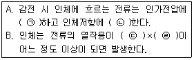
- ㉠비례, ㉡반비례, ㉢전류의 세기, ㉣시간
- ㉠반비례, ㉡비례, ㉢전류의 세기, ㉣시간
- ㉠비례, ㉡반비례, ㉢전압, ㉣시간
- ㉠반비례, ㉡비례, ㉢전압, ㉣시간
(정답률: 74%)
64. 폭발 위험장소 분류 시 분진폭발위험장소의 종류에 해당하지 않는 것은?
- 20종 장소
- 21종 장소
- 22종 장소
- 23종 장소
(정답률: 75%)
65. 분진폭발 방지대책으로 가장 거리가 먼 것은?
- 작업장 등은 분진이 퇴적하지 않는 형상으로 한다.
- 분진 취급 장치에는 유효한 집진 장치를 설치한다.
- 분체 프로세스 장치는 밀폐화하고 누설이 없도록 한다.
- 분진 폭발의 우려가 있는 작업장에는 감독자를 상주시킨다.
(정답률: 76%)
66. 정전유도를 받고 있는 접지되어 있지 않는 도전성 물체에 접촉한 경우 전격을 당하게 되는데 이 때 물체에 유도된 전압 V(V)를 옳게 나타낸 것은? (단, E는 송전선의 대지전압, C1은 송전선과 물체사이의 정전용량, C2는 물체와 대지사이의 정전용량이며, 물체와 대지사이의 저항은 무시한다.)
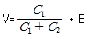
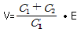
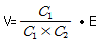
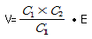
(정답률: 60%)
67. 화염일주한계에 대해 가장 잘 설명한 것은?
- 화염이 발화온도로 전파될 가능성의 한계값이다.
- 화염이 전파되는 것을 저지할 수 있는 틈새의 최대 간격치이다.
- 폭발성 가스와 공기가 혼합되어 폭발한계내에 있는 상태를 유지하는 한계값이다.
- 폭발성 분위기가 전기 불꽃에 의하여 화염을 일으킬 수 있는 최소의 전류값이다.
(정답률: 74%)
68. 정전기 발생의 일반적인 종류가 아닌 것은?
- 마찰
- 중화
- 박리
- 유동
(정답률: 80%)
69. 전기기계·기구의 조작 시 안전조치로서 사업주는 근로자가 안전하게 작업할 수 있도록 전기 기계·기구로부터 폭 얼마 이상의 작업공간을 확보하여야 하는가?
- 30cm
- 50cm
- 70cm
- 100cm
(정답률: 43%)
70. 가수전류(Let-go Current)에 대한 설명으로 옳은 것은?
- 마이크 사용 중 전격으로 사망에 이른 전류
- 전격을 일으킨 전류가 교류인지 직류인지 구별할 수 없는 전류
- 충전부로부터 인체가 자력으로 이탈할 수 있는 전류
- 몸이 물에 젖어 전압이 낮은 데도 전격을 일으킨 전류
(정답률: 71%)
71. 정전 작업 시 작업 전 안전조치사항으로 가장 거리가 먼 것은?
- 단락 접지
- 잔류 전하 방전
- 절연 보호구 수리
- 검전기에 의한 정전확인
(정답률: 65%)
72. 감전사고의 방지 대책으로 가장 거리가 먼 것은?
- 전기 위험부의 위험 표시
- 충전부가 노출된 부분에 절연방호구 사용
- 충전부에 접근하여 작업하는 작업자 보호구착용
- 사고발생 시 처리프로세스 작성 및 조치
(정답률: 77%)
73. 위험방지를 위한 전기기계·기구의 설치 시 고려할 사항으로 거리가 먼 것은?
- 전기기계·기구의 충분한 전기적 용량 및 기계적 강도
- 전기기계·기구의 안전효율을 높이기 위한 시간 가동율
- 습기·분진 등 사용장소의 주위 환경
- 전기적·기계적 방호수단의 적정성
(정답률: 60%)
74. 200A의 전류가 흐르는 단상 전로의 한 선에서 누전되는 최소 전류(mA)의 기준은?
- 100
- 200
- 10
- 20
(정답률: 54%)
75. 정전기 방전에 의한 폭발로 추정되는 사고를 조사함에 있어서 필요한 조치로서 가장 거리가 먼 것은?
- 가연성 분위기 규명
- 사고현장의 방전흔적 조사
- 방전에 따른 점화 가능성 평가
- 전하발생 부위 및 축적 기구 규명
(정답률: 42%)
76. 감전쇼크에 의해 호흡이 정지되었을 경우 일반적으로 약 몇 분 이내에 응급처치를 개시하면 95% 정도를 소생시킬 수 있는가?
- 1분 이내
- 3분 이내
- 5분 이내
- 7분 이내
(정답률: 72%)
77. 다음 중 방폭구조의 종류가 아닌 것은?
- 본질안전 방폭구조
- 고압 방폭구조
- 압력 방폭구조
- 내압 방폭구조
(정답률: 76%)
78. 전선의 절연 피복이 손상되어 동선이 서로 직접 접촉한 경우를 무엇이라 하는가?
- 절연
- 누전
- 접지
- 단락
(정답률: 61%)
79. 이상적인 피뢰기가 가져야 할 성능으로 틀린 것은?
- 제한전압이 낮을 것
- 방전개시전압이 낮을 것
- 뇌전류 방전능력이 적을 것
- 속류차단을 확실하게 할 수 있을 것
(정답률: 71%)
80. 인체의 전기저항이 5000Ω이고, 세동전류와 통전시간과의 관계를
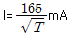
라 할 경우, 심실세동을 일으키는 위험 에너지는 약 몇 J인가? (단, 통전시간은 1초로 한다)- 5
- 30
- 136
- 825
(정답률: 79%)
5과목: 화학설비위험방지기술
81. 사업주는 인화성 액체 및 인화성 가스를 저장 취급하는 화학설비에서 증기나 가스를 대기로 방출하는 경우에는 외부로부터의 화염을 방지하기 위하여 화염방지기를 설치하여야 한다. 다음 중 화염방지기의 설치 위치로 옳은 것은?
- 설비의 상단
- 설비의 하단
- 설비의 측면
- 설비의 조작부
(정답률: 81%)
82. 다음 중 자연발화가 쉽게 일어나는 조건으로 틀린 것은?
- 주위온도가 높을수록
- 열 축적이 클수록
- 적당량의 수분이 존재할 때
- 표면적이 작을수록
(정답률: 78%)
83. 8% NaOH 수용액과 5% NaOH 수용액을 반응기에 혼합하여 6% 100kg의 NaOH 수용액을 만들려면 각각 약 몇 kg의 NaOH 수용액이 필요한가?
- 5% NaOH 수용액: 33.3kg,
8% NaOH 수용액: 66.7kg - 5% NaOH 수용액: 56.8kg,
8% NaOH 수용액: 43.2kg - 5% NaOH 수용액: 66.7kg,
8% NaOH 수용액: 33.3kg - 5% NaOH 수용액: 43.2kg,
8% NaOH 수용액: 56.8kg
(정답률: 62%)
84. 사업주는 산업안전보건기준에 관한 규칙에서 정한 위험물을 기준량 이상으로 제조하거나 취급하는 특수화학설비를 설치하는 경우에는 내부의 이상 상태를 조기에 파악하기 위하여 필요한 온도계·유량계·압력계 등의 계측장치를 설치하여야 한다. 이때 위험물질별 기준량으로 옳은 것은?
- 부탄 - 25m3
- 부탄 - 150m3
- 시안화수소 - 5kg
- 시안화수소 – 200kg
(정답률: 50%)
85. 폭발의 위험성을 고려하기 위해 정전에너지 값을 구하고자 한다. 다음 중 정전에너지를 구하는 식은? (단, E는 정전에너지, C는 정전 용량, V는 전압을 의미한다)
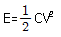
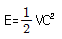
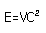
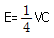
(정답률: 79%)
86. 다음 중 유류화재에 해당하는 화재의 급수는?
- A급
- B급
- C급
- D급
(정답률: 80%)
87. 할론 소화약제 중 Halon 2402 의 화학식으로 옳은 것은?
- C2F4Br2
- C2H4Br2
- C2Br4H2
- C2Br4F2
(정답률: 68%)
88. 위험물의 저장방법으로 적절하지 않은 것은?
- 탄화칼슘은 물 속에 저장한다.
- 벤젠은 산화성 물질과 격리시킨다.
- 금속나트륨은 석유 속에 저장한다.
- 질산은 갈색병에 넣어 냉암소에 보관한다.
(정답률: 72%)
89. 다음 중 산업안전보건법령상 공정안전 보고서의 안전운전 계획에 포함되지 않는 항목은?
- 안전작업허가
- 안전운전지침서
- 가동 전 점검지침
- 비상조치계획에 따른 교육계획
(정답률: 60%)
90. 마그네슘의 저장 및 취급에 관한 설명으로 틀린 것은?
- 화기를 엄금하고, 가열, 충격, 마찰을 피한다.
- 분말이 비산하지 않도록 밀봉하여 저장한다.
- 제6류 위험물과 같은 산화제와 혼합되지 않도록 격리, 저장한다.
- 일단 연소하면 소화가 곤란하지만 초기 소화 또는 소규모 화재 시 물, CO2소화설비를 이용하여 소화한다.
(정답률: 80%)
91. 다음 중 분진이 발화 폭발하기 위한 조건으로 거리가 먼 것은?
- 불연성질
- 미분상태
- 점화원의 존재
- 지연성가스 중에서의 교반과 운동
(정답률: 77%)
92. 다음 중 산업안전보건법령상 산화성 액체 또는 산화성 고체에 해당하지 않는 것은?
- 질산
- 중크롬산
- 과산화수소
- 질산에스테르
(정답률: 46%)
93. 열교환기의 열 교환 능률을 향상시키기 위한 방법이 아닌 것은?
- 유체의 유속을 적절하게 조절한다.
- 유체의 흐르는 방향을 병류로 한다.
- 열교환하는 유체의 온도차를 크게 한다.
- 열전도율이 높은 재료를 사용한다.
(정답률: 70%)
94. 다음 중 고체의 연소방식에 관한 설명으로 옳은 것은?
- 분해연소란 고체가 표면의 고온을 유지하며 타는 것을 말한다.
- 표면연소란 고체가 가열되어 열분해가 일어나고 가연성 가스가 공기 중의 산소와 타는 것을 말한다.
- 자기연소란 공기 중 산소를 필요로 하지 않고 자신이 분해되며 타는 것을 말한다.
- 분무연소란 고체가 가열되어 가연성가스를 발생시키며 타는 것을 말한다.
(정답률: 68%)
95. 사업주는 안전밸브등의 전단·후단에 차단밸브를 설치해서는 아니 된다. 다만, 별도로 정한 경우에 해당할 때는 자물쇠형 또는 이에 준하는 형식의 차단밸브를 설치할 수 있다. 이에 해당하는 경우가 아닌 것은?
- 화학설비 및 그 부속설비에 안전밸브등이 복수방식으로 설치되어 있는 경우
- 예비용 설비를 설치하고 각각의 설비에 안전밸브등이 설치되어 있는 경우
- 파열판과 안전밸브를 직렬로 설치한 경우
- 열팽창에 의하여 상승된 압력을 낮추기 위한 목적으로 안전밸브가 설치된 경우
(정답률: 64%)
96. 위험물안전관리법령에서 정한 제3류 위험물에 해당하지 않는 것은?
- 나트륨
- 알킬알루미늄
- 황린
- 니트로글리세린
(정답률: 62%)
97. 다음 [표]를 참조하여 메탄 70vol%, 프로판 21vol%, 부탄 9vol%인 혼합가스의 폭발범위를 구하면 약 몇 vol%인가?
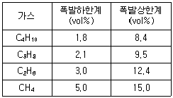
- 3.45~9.11
- 3.45~12.58
- 3.85~9.11
- 3.85~12.58
(정답률: 67%)
98. ABC급 분말 소화약제의 주성분에 해당하는 것은?
- NH4H2PO4
- Na2CO3
- Na2SO3
- K2CO3
(정답률: 64%)
99. 공기 중 아세톤의 농도가 200ppm(TLV 500ppm), 메틸에틸케톤(MEK)의 농도가 100ppm(TLV 200ppm)일 때 혼합물질의 허용농도는 약 몇 ppm인가? (단, 두 물질은 서로 상가작용을 하는 것으로 가정한다.)
- 150
- 200
- 270
- 333
(정답률: 56%)
100. 다음의 설명에 해당하는 안전장치는?
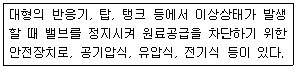
- 파열판
- 안전밸브
- 스팀트랩
- 긴급차단장치
(정답률: 56%)
6과목: 건설안전기술
101. 단관비계의 도괴 또는 전도를 방지하기 위하여 사용하는 벽이음의 간격기준으로 옳은 것은?
- 수직방향 5m 이하, 수평방향 5m 이하
- 수직방향 6m 이하, 수평방향 6m 이하
- 수직방향 7m 이하, 수평방향 7m 이하
- 수직방향 8m 이하, 수평방향 8m 이하
(정답률: 75%)
102. 건설업 산업안전보건관리비 내역 중 계상비용에 해당되지 않는 것은?
- 근로자 건강관리비
- 건설재해예방 기술지도비
- 개인보호구 및 안전장구 구입비
- 외부비계, 작업발판 등의 가설구조물 설치 소요비
(정답률: 60%)
103. 다음은 산업안전보건법령에 따른 동바리로 사용하는 파이프 서포트에 관한 사항이다. ( )안에 들어갈 내용을 순서대로 옳게 나타낸 것은?
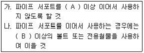
- A: 2개, B: 2개
- A: 3개, B: 4개
- A: 4개, B: 3개
- A: 4개, B: 4개
(정답률: 76%)
104. 화물취급 작업 시 준수사항으로 옳지 않은 것은?
- 꼬임이 끊어지거나 심하게 부식된 섬유로프는 화물운반용으로 사용해서는 아니 된다.
- 섬유로프 등을 사용하여 화물취급작업을 하는 경우에 해당 섬유로프 등을 점검하고 이상을 발견한 섬유로프 등을 즉시 교체하여야 한다.
- 차량 등에서 화물을 내리는 작업을 하는 경우에 해당 작업에 종사하는 근로자에게 쌓여 있는 화물의 중간에서 필요한 화물을 빼낼 수 있도록 허용한다.
- 하역작업을 하는 장소에서 작업장 및 통로의 위험한 부분에는 안전하게 작업할 수 있는 조명을 유지한다.
(정답률: 84%)
1⑤. 시스템 비계를 사용하여 비계를 구성하는 경우의 준수사항으로 옳지 않은 것은?
- 수직재·수평재·가새재를 견고하게 연결하는 구조가 되도록 할 것
- 수평재는 수직재와 직각으로 설치하여야 하며, 체결 후 흔들림이 없도록 견고하게 설치할 것
- 비계 밑단의 수직재와 받침철물은 밀착 되도록 설치하고, 수직재와 받침철물의 연결부의 겹침길이는 받침철물 전체길이의 3분의 1 이상이 되도록 할 것
- 벽 연결재의 설치간격은 시공자가 안전을 고려하여 임의대로 결정한 후 설치할 것
(정답률: 79%)
106. 건설공사 위험성평가에 관한 내용으로 옳지 않은 것은?
- 건설물, 기계·기구, 설비 등에 의한 유해·위험요인을 찾아내어 위험성을 결정하고 그 결과에 따른 조치를 하는 것을 말한다.
- 사업주는 위험성평가의 실시내용 및 결과를 기록·보존하여야 한다.
- 위험성평가 기록물의 보존기간은 2년이다.
- 위험성평가 기록물에는 평가대상의 유해·위험요인, 위험성결정의 내용 등이 포함된다.
(정답률: 78%)
107. 철골작업에서의 승강로 설치기준 중 ( )안에 알맞은 것은?
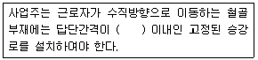
- 20cm
- 30cm
- 40cm
- 50cm
(정답률: 55%)
108. 사다리식 통로 등을 설치하는 경우 폭은 최소 얼마 이상으로 하여야 하는가?
- 30cm
- 40cm
- 50cm
- 60cm
(정답률: 46%)
109. 추락재해에 대한 예방차원에서 고소작업의 감소를 위한 근본적인 대책으로 옳은 것은?
- 방망 설치
- 지붕트러스의 일체화 또는 지상에서 조립
- 안전대 사용
- 비계 등에 의한 작업대 설치
(정답률: 71%)
110. 다음 중 건설공사 유해·위험방지계획서 제출대상 공사가 아닌 것은?
- 지상높이가 50m인 건축물 또는 인공구조물 건설공사
- 연면적이 3,000m2인 냉동·냉장창고시설의 설비공사
- 최대 지간길이가 60m인 교량건설공사
- 터널건설공사
(정답률: 73%)
111. 겨울철 공사중인 건축물의 벽체 콘크리트 타설 시 거푸집이 터져서 콘크리트 쏟아지는 사고가 발생하였다. 이 사고의 발생 원인으로 추정 가능한 사안 중 가장 타당한 것은?
- 콘크리트의 타설속도가 빨랐다.
- 진동기를 사용하지 않았다.
- 철근 사용량이 많았다.
- 콘크리트의 슬럼프가 작았다.
(정답률: 74%)
112. 다음 중 운반작업 시 주의사항으로 옳지 않은 것은?
- 운반 시의 시선은 진행방향을 향하고 뒷걸음 운반을 하여서는 안 된다.
- 무거운 물건을 운반할 때 무게 중심이 높은 화물은 인력으로 운반하지 않는다.
- 어깨높이보다 높은 위치에서 화물을 들고 운반하여서는 안 된다.
- 단독으로 긴 물건을 어깨에 메고 운반할 때에는 뒤쪽을 위로 올린 상태로 운반한다.
(정답률: 82%)
113. 다음 중 직접기초의 터파기 공법이 아닌 것은?
- 개착 공법
- 시트 파일 공법
- 트렌치 컷 공법
- 아일랜드 컷 공법
(정답률: 46%)
114. 건설재해대책의 사면보호공법 중 식물을 생육시켜 그 뿌리로 사면의 표층토를 고정하여 빗물에 의한 침식, 동상, 이완 등을 방지하고, 녹화에 의한 경관조성을 목적으로 시공하는 것은?
- 식생공
- 쉴드공
- 뿜어 붙이기공
- 블럭공
(정답률: 84%)
115. 훅걸이용 와이어로프 등이 훅으로부터 벗겨지는 것을 방지하기 위한 장치는?
- 해지장치
- 권과방지장치
- 과부하방지장치
- 턴버클
(정답률: 60%)
116. 장비가 위치한 지면보다 낮은 장소를 굴착하는 데 적합한 장비는?
- 트럭크레인
- 파워쇼벨
- 백호우
- 진폴
(정답률: 79%)
117. 추락방지용 방망 중 그물코의 크기가 5cm인 매듭방망 신품의 인장강도는 최소 몇 kg 이상이어야 하는가?
- 60
- 110
- 150
- 200
(정답률: 74%)
118. 잠함 또는 우물통의 내부에서 굴착작업을 할 때의 준수사항으로 옳지 않은 것은?
- 굴착 깊이가 10m를 초과하는 경우에는 해당 작업장소와 외부와의 연락을 위한 통신설비등을 설치하여야 한다.
- 산소 결핍의 우려가 있는 경우에는 산소의 농도를 측정하는 자를 지명하여 측정하도록 한다.
- 근로자가 안전하게 승강하기 위한 설비를 설치한다.
- 측정 결과 산소의 결핍이 인정될 경우에는 송기를 위한 설비를 설치하여 필요한 양의 공기를 공급하여야 한다.
(정답률: 52%)
119. 이동식비계를 조립하여 작업을 하는 경우의 준수사항으로 옳지 않은 것은?
- 비계의 최상부에서 작업을 하는 경우에는 안전난간을 설치할 것
- 작업발판은 항상 수평을 유지하고 작업발판 위에서 안전난간을 딛고 작업을 하거나 받침대 또는 사다리를 사용하여 작업하지 않도록 할 것
- 작업발판의 최대적재하중은 150kg을 초과하지 않도록 할 것
- 이동식비계의 바퀴에는 뜻밖의 갑작스러운 이동 또는 전도를 방지하기 위하여 브레이크·쐐기 등으로 바퀴를 고정시킨 다음 비계의 일부를 견고한 시설물에 고정하거나 아웃트리거(outrigger)를 설치하는 등 필요한 조치를 할 것
(정답률: 78%)
120. 항타기 또는 항발기의 권상장치 드럼축과 권상장치로부터 첫 번째 도르래의 축 간의 거리는 권상장치 드럼폭의 몇 배 이상으로 하여야 하는가?
- 5배
- 8배
- 10배
- 15배
(정답률: 44%)